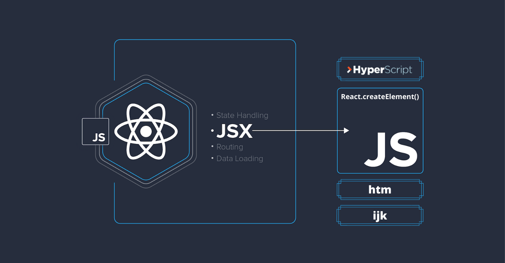

Mi az a React?
A React (React.js vagy ReactJS néven is ismert) egy ingyenes és nyílt forráskódú front-end JavaScript könyvtár, amely felhasználói felületeket készít UI-komponensek alapján. A Meta (korábban Facebook) és egy egyéni fejlesztőkből és vállalatokból álló közösség tartja fenn. A React alapként használható egyoldalas, mobil vagy szerverre renderelt alkalmazások fejlesztéséhez olyan keretrendszerekkel, mint a Next.js.
A React azonban csak az állapotkezeléssel és ennek az állapotnak a DOM-ra történő megjelenítésével foglalkozik, így a React alkalmazások létrehozása általában további könyvtárak használatát igényli az útválasztáshoz, valamint bizonyos kliensoldali funkciókat. A React olyan keretrendszerek alternatívája, mint az Angular és a Vue, amelyek mindegyike lehetővé teszi komplex funkciók létrehozását.
A React egy VIRTUÁLIS DOM-ot hoz létre a memóriában. Ahelyett, hogy közvetlenül a böngésző DOM-ját manipulálná, a React egy virtuális DOM-ot hoz létre a memóriában, ahol minden szükséges manipulációt elvégez, mielőtt a változásokat a böngésző DOM-jában végrehajtaná. A React kideríti, hogy milyen módosítások történtek, és csak azt változtatja meg, amit meg kell változtatni.
JSX
A JSX egy JavaScript szintaxisbővítmény, amelyet a React elemkészítés során használnak a fejlesztők HTML-kód JavaScript-objektumokba való beágyazására, mivel a JSX elfogadja az érvényes JavaScript-kifejezéseket és a függvénybeágyazást, valamint egyszerűsítheti az összetett kódstruktúrákat.
A JSX segít a Cross-Site Scripting (XSS) támadások leküzdésében is. Alapértelmezés szerint a React DOM a JSX-be ágyazott értékeket a renderelés előtt karakterláncokká alakítja. Következésképpen harmadik felek nem tudnak extra kódot bejuttatni a felhasználói bemeneten keresztül, kivéve, ha az kifejezetten az alkalmazásba van írva.
Virtuális DOM

A Document Object Model (DOM) egy weboldalt, egy adatfaszerkezetben jelenít meg. A ReactJS a Virtual DOM fákat a memóriában tárolja. Ezáltal a React képes frissítéseket alkalmazni az adatfa meghatározott részeire, ami gyorsabb, mint a DOM fa egészének újrarendezése.
Amikor az adatokban változás történik, a ReactJS új Virtuális DOM-fát generál, és összehasonlítja azt az előzővel, hogy megtalálja a lehető leggyorsabb módját a változások valós DOM-ban történő végrehajtásához. Ezt a folyamatot "diffingnek" nevezzük.
Azzal, hogy az UI manipulációja csak a valós DOM-fa meghatározott szakaszait érinti, a frissített változat renderelése kevesebb időt vesz igénybe és kevesebb erőforrást használ. Ez a gyakorlat nagymértékben előnyös az intenzív felhasználóiint erakcióval járó nagy projektek számára.
Verziók
| Kiadás | Kiadás dátuma | Kiadás utolsó verziószáma | Támogatás dátuma |
|---|---|---|---|
| 18 | 2022.03.39. | 18.2.0 | ~ |
| 17 | 2020.10.20. | 17.0.2 | 2022.03.29. |